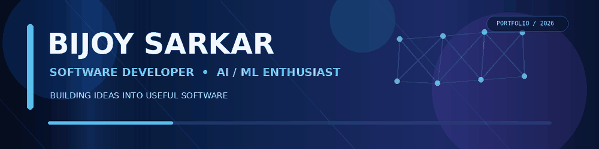
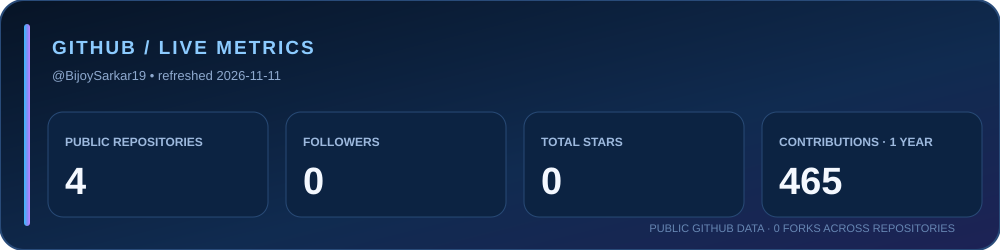
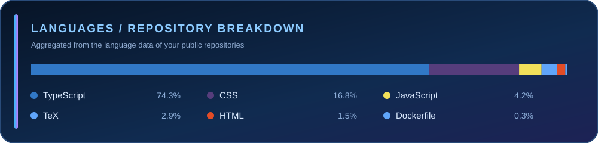
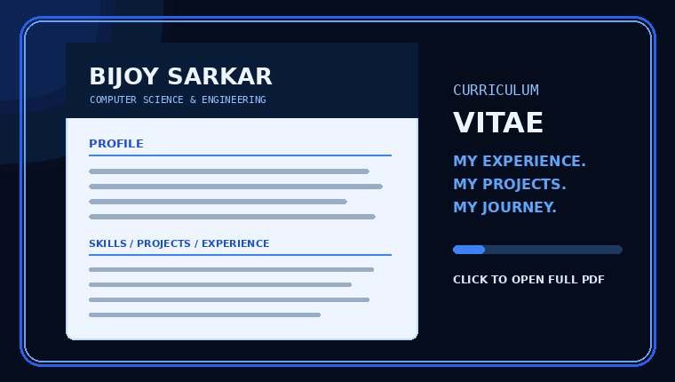
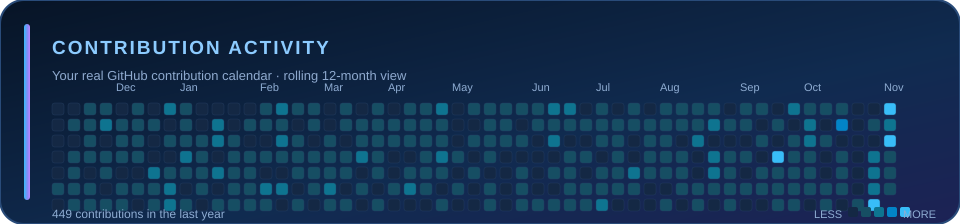

🛡️ Rakshak-AI
AI health assistant with conversational support, BMI calculation and speech features.
Python · Llama 3.2 · Tkinter · SQLite

I'm a Computer Science & Engineering student at ICFAI University Tripura. I enjoy turning ideas into working software and exploring AI/ML, computer vision, NLP, full-stack development and mobile apps.


AI health assistant with conversational support, BMI calculation and speech features.
Python · Llama 3.2 · Tkinter · SQLite
Computer vision project identifying roads in satellite imagery.
Python · Jupyter · Kaggle
Face-recognition-based attendance workflow.
Python · OpenCV
Mobile expense recording and management app.
Flutter · Dart · Firebase
Text and YouTube comment sentiment analysis.
Python · Flask · NLTK · VADER
NLP experiments using Python and real-world datasets.
Python · Jupyter · Kaggle

| Organization | Area |
|---|---|
| NIT Silchar | AI / ML · Road segmentation |
| AI / ML | |
| Apni Vidya | Full-Stack Development |
| TalkEng | App Development |
| STQC, MeitY | Cybersecurity |
B.Tech CSE · ICFAI University Tripura
